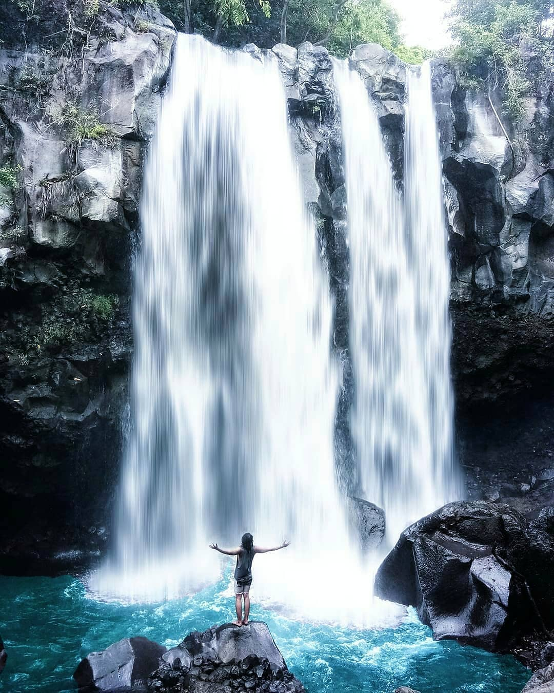
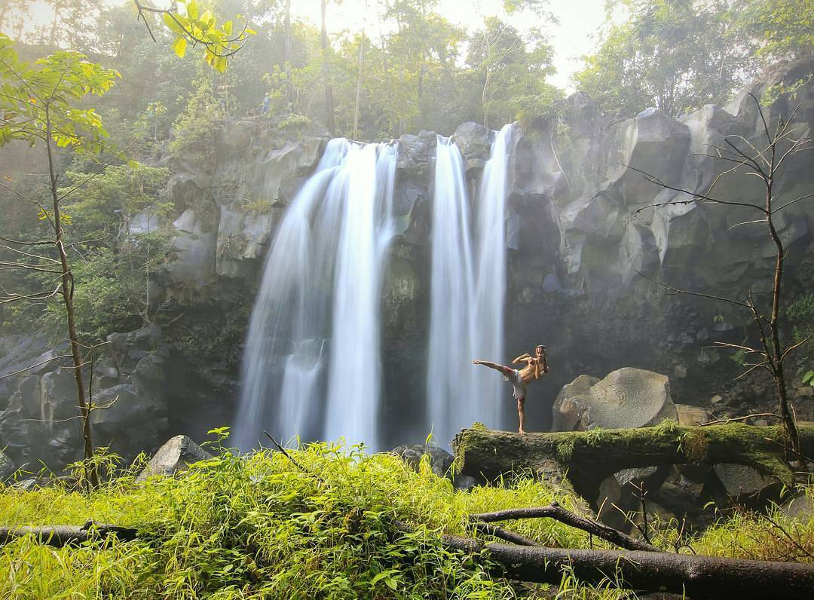

Post by dayat, Sunday 06 Juny 2018
Bicara tentang air terjun yang airnya tidak musiman berarti membicarakan air terjun Oi Marai salah satu air terjun yang debet airnya tak pernah mongering untuk daerah Pulau Sumbawa yang terkenal akan kering dan panas. Namun beda dengan wilayah Oi Marai yang terletak di Desa Kawinda Toi, Kecamatan Tambora, Kabupaten Bima. Mempunyai keistemawaan dimana airnya berasal dari kawah gunung Tambora langsung.
Air yang mengalir deras yang berasal dari Moti La Halo ini, berasal dari sebuah danau di dalam kawah Tambora. Jernih, sangat dingin dan segar jika diminum langsung, sungai yang mengalir dari atas ketinggian 1000mdpl ini tetap mengalir deras hingga kebawah SP4 (Satuan Pemukiman) transmigrasi kawinda Toi. Oleh masyarakat Kawinda Toi dinamakan sungai Oi Marai yang berarti air yang mengalir.
Dari Kota Bima menuju Kawinda Toi memakan waktu 4 Jam dengan menggunakan sepeda motor. Banyak keindahan yang bakal ditemui dalam perjalanan yaitu kita bisa singgah di Sanggar untuk wisata sejarah dengan mengunjungi Museum Balaba Sanggar, situs Rade Nae Boro, mata air Tampiro hingga Padang savana Piong dan masih banyak lagi yang bisa dijumpai untuk menghilangkan lelah kita dalam perjalanan.
Setelah 4 jam jarak yang ditempuh, untuk menuju Oi Marai kita tinggal menanyakan warga sekitar letak SP4, dan saran saya jangan menerima tawaran jasa guide dengan harga yang tidak masuk akal. Sebaiknya anda langsung saja menuju SP4 kemudian dengan mengikuti papan penunjuk arah, setelah tiba di SP4 tinggal mencari rumah Aba Fi bapaknya Awal untuk dijadikan tempat istirahat serta bisa menyimpan sepeda motor atau mobil maupun tempat menginap atau ngecamp. Rekomendasi dari saya Aba Fi adalah sosok yang sangat ramah dan ketiga anaknya Awal, Jul dan Dion siap mengantar hingga ke air terjun paling atas.
Memasuki wilayah air terjun di pos pertama pendakian Tambora berarti kita memasuki wilayah Taman Nasional Tambora dengan harga tiket masuk hanya Rp.5.000/perorang. Saran saya untuk menjelajah kelima spot air terjun di oi marai alangkah baiknya kita mencoba dulu dari atas baru ke bawah. Pada spot air terjun Niwa diatas anda akan ditantang oleh alam Tambora untuk menjamahnya dengan rute yang sangat menakjubkan. Air terjun Niwa adalah spot air terjun yang keliwa di hitung dari bawah (satu) dimana pada spot air terjun kita akan menemukan masing-masing keunikannya, seperti halnya spot air terjun Niwa ini kita bakal bisa melihat deretan sarang lebah yang berjejer di tebing. Tinggi air terjun Niwa sekitar 10 meter lebih dan disampingnya ada tetesan air yang turun dari akar pohon diatas tebing.
Setelah air terjun Niwa ada air terjun Bidadari dengan ketinggian kurang lebih 25 meter, jaraknya kedua air terjun hanya satu jam lebih perjalanan, air terjun ini adalah air terjun paling deras dan tinggi di antara air terjun Oi Marai, namun diharapkan hati-hati karena bebatuanya yang licin, untuk menjadikan foto anda hits dengan latar air terjun inilah yang paling manakjubkan. Areal air terjun ini cukup luas anda bisa menjejalnya dari atas hingga mandi dibawah derasnya air yang jatuh. Segar dan dingin akan membuat kita untuk berlama-lama mandi.
Setelah air terjun Bidadari kemudian ada air terjun ketiga yaitu air tejun bendungan yang terletak persis dibawah Dam tua yang entah tahun berapa dibangun. Air yang jernih akan membuat siapapun tergiur untuk terjun dan mandi, pada air terjun dam ini tidak begitu tinggi hanya sekitar 5 meter lebih jaraknya dengan air terjun Bidadari hanya 15 menit. Namun kita bisa istirahat untuk bersantai sambil mendengarkan suara air dan kicauan burung sebelum menjejal air terjun lainnya. Pada air terjun dam ini biasanya menjadi tempat rekreasi masyarakat lokal untuk menikmati makanan atau dalam bahasa Bima disebut “Ngaha Caru” dengan bau ayam panggang yang menggoda, biasanya diakhir pekan sangat ramai.
Selanjutnya air terjun yang ke empat dan bernama air terjun cabang empat, dari air terjun dam kita jalan turun kebawah menyusuri sungai dengan jarak sekitar 20 meter, hati-hati jika melangkah karena bebatuan yang licin dan cadas. Keunikan air terjun cabang empat adalah semburan air yang jatuh seperti air mancur namun dengan fersi yang sangat deras dan bercabang. Spot yang sangat indah dan mempesona diantara spot air terjun lainnya, air terjun bagi saya tempat favorit untuk menikmati alam Oi Marai, namun berhati-hatilah jika duduk atau mandi karena dibalik keindahannya juga terdapat lintah, rajinlah untuk sambil memeriksa badan anda untuk berjaga-jaga.
Kemudian air terjun yang terakhir atau yang kelima yaitu air terjun pembangkit listrik jaraknya dengan air terjun cabang empat sekitar 30 meter, dengan ketinggian kurang lebih sekitar 6 meter. Areal air terjun ini cukup luas, dari atas tebing kita bisa melihat sisa lahar yang sudah membatu sisa dari letusan Tambora 205 tahun silam. Dari spot ini kita bisa bersantai untuk ngopi atau menikmati makanan kecil dari tas yang anda bawah, karena tempatnya bisa dibilang sangat private jauh dari keramaian jika diakhir pekan.
Dari kelima spot air terjun Oi Marai anda tinggal memilih air terjun yang mana menjadi tempat favorit anda, dan katanya air terjun lebih dari lima karena ada dua lagi yang belum terjamah hanya para pemburu yang pernah mengunjunginya kata Aba Fi, berhubung tempatnya sangat jauh keatas lereng Tambora.
Sumber : http://www.mbojoklopedia.com/2014/12/nikmati-alam-bebas-di-semenanjung_24.html